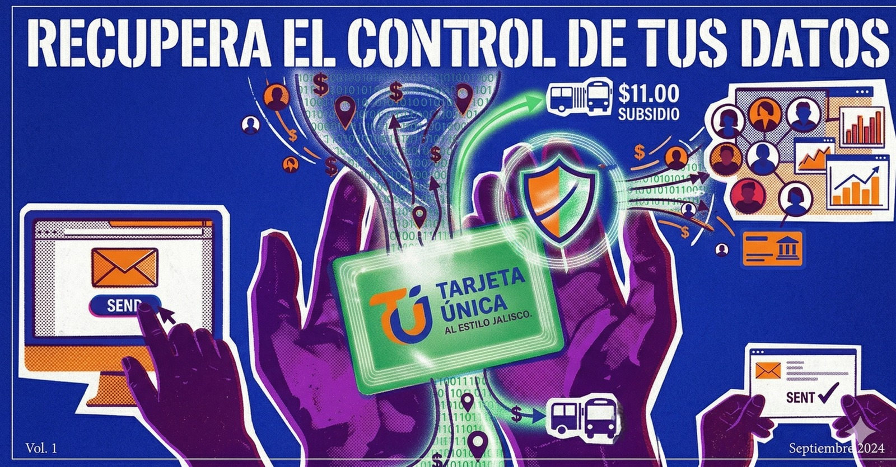

Sección: Tarifazo

Nota de investigación
Broxel en Jalisco: una licitación extraña y un contrato millonario
El gobierno de Jalisco contrató a una empresa con antecedentes regulatorios para administrar el subsidio al transporte. Analizamos el expediente.
Leer nota
Análisis
Cuidar tu plástico para cuidar tu autonomía
Con la tarjeta verde descontinuada, conservar tu Mi Movilidad se convierte en algo más que comodidad. Por Fernando Casarín.
Leer análisis
Guía práctica
¿Cómo proteger tus datos personales al tramitar la Tarjeta Única al Estilo Jalisco?
Broxel puede usar y compartir tus datos para fines comerciales. Existe una forma sencilla de oponerte sin perder el subsidio de $11 pesos.
Leer guíaSección: Transparencia

Análisis de datos
En el padrón abierto, 9 de cada 10 rutas aparecen fuera de plazo
280 de 310 rutas rebasan el plazo registrado en la base oficial. El hallazgo exhibe un problema serio de opacidad en el registro estatal.
Leer análisis
Nota
¿Qué tan satisfechos están en la ZMG con su transporte?
El 60% usa el transporte porque no tiene otra opción. Los resultados de la encuesta de IMEPLAN — y sus propios límites metodológicos.
Leer nota